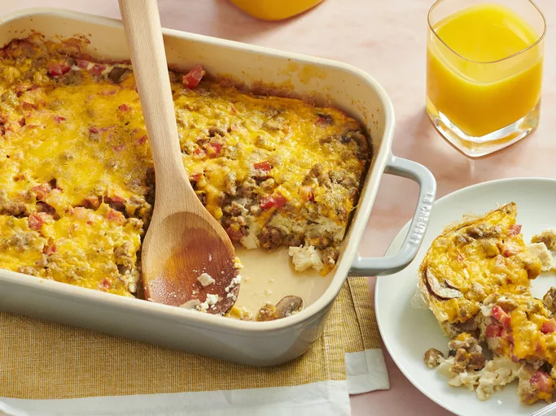

Egg White Breakfast Casserole

Description
This light and fluffy egg white breakfast casserole is a healthy twist on the classic breakfast dish. Packed with fresh vegetables and cheese, it’s a great way to start your day without the heaviness of traditional casseroles. Perfect for meal prep or a weekend brunch!
Ingredients
- 12 large egg whites
- 1 cup diced bell peppers (red, green, or a mix)
- 1 cup chopped spinach
- 1/2 cup diced onion
- 1 cup shredded low-fat cheese (cheddar or mozzarella)
- 1/2 cup milk (or a non-dairy alternative)
- 1 teaspoon salt
- 1/2 teaspoon black pepper
- 1/2 teaspoon garlic powder
- 1/2 teaspoon paprika
- 1 tablespoon olive oil (for greasing the pan)
Steps
- Preheat your oven to 350°F (175°C).
- In a large bowl, whisk together the egg whites, milk, salt, pepper, garlic powder, and paprika.
- In a greased 9x13 inch baking dish, layer the diced bell peppers, chopped spinach, and diced onion.
- Pour the egg white mixture over the vegetables and sprinkle with shredded cheese.
- Bake for 25-30 minutes or until the egg whites are set and the top is lightly golden.
- Let it cool for a few minutes before slicing and serving.
Home